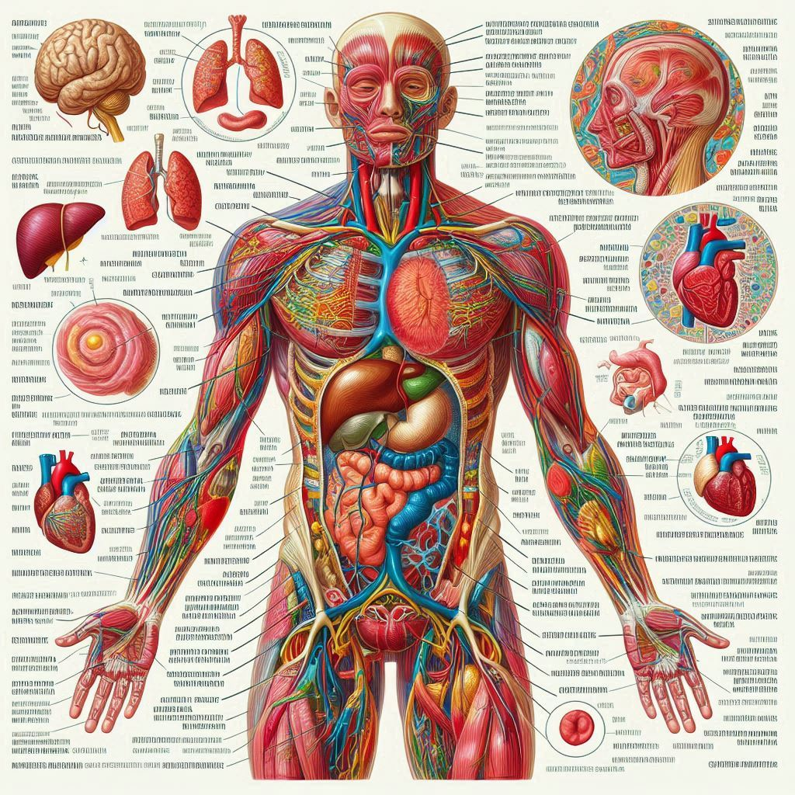
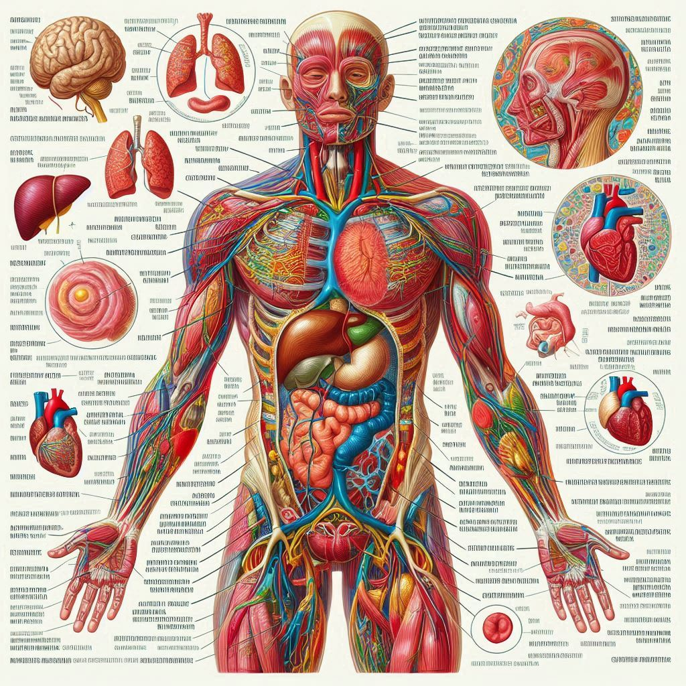

HealthSphere


"Desvelando los misterios del cuerpo humano: Un viaje a través de la anatomía, fisiología, histología y morfología" Bienvenido a un nuevo mundo, un pequeño rincon lleno de diversos conocimientos. En donde podrás aprender cosas nuevas y adquirir nuevas habilidades. Acá te enseñaremos de una manera más sencilla, divertida y, con unos conceptos más detallados pero sencillos, para que puedas aprender de forma rápida y sencilla
Encontraras temas como lo son: anatomía, fisiología, morfología e histología. Adicional a esto, encontraras conceptos sencillos de entender y super practicos en donde no se te dificultará en absoluto aprender y lograr memorizar algún conpceto que te beneficie.

.png)
 

La anatomía es la ciencia que estudia la estructura y organización de los organismos, enfocándose en sus componentes, como órganos, tejidos y sistemas. Se divide en anatomía macroscópica, que examina estructuras visibles a simple vista, y anatomía microscópica, que analiza componentes a nivel celular. Su conocimiento es fundamental para disciplinas como la medicina, la biología y la fisioterapia, ya que permite entender el funcionamiento del cuerpo humano y sus interrelaciones.
La fisiología es la rama de la biología que estudia las funciones y procesos vitales de los organismos, tanto a nivel celular como de sistemas y órganos. Se centra en cómo funcionan las diferentes partes del cuerpo, cómo interactúan entre sí y cómo responden a estímulos internos y externos. La fisiología es crucial para entender aspectos como la homeostasis, el metabolismo y las respuestas del organismo a enfermedades, y es fundamental en campos como la medicina, la farmacología y la biotecnología.

La morfología humana es el estudio de la forma y estructura del cuerpo humano, incluyendo sus características físicas y las variaciones que pueden existir entre individuos. Este campo abarca aspectos como la anatomía, la proporción de las extremidades, la conformación del rostro y la distribución de tejidos y órganos. La morfología humana es fundamental en disciplinas como la medicina, la antropología y la ergonomía, ya que proporciona información sobre el desarrollo, la salud y la adaptación del ser humano.
La histología es la rama de la biología que estudia los tejidos de los organismos a nivel microscópico. Se enfoca en la composición, organización y función de las células que forman los diferentes tipos de tejidos, como epitelial, conectivo, muscular y nervioso. A través de técnicas de tinción y microscopía, la histología permite comprender cómo estos tejidos contribuyen al funcionamiento de órganos y sistemas en el cuerpo. Su estudio es esencial en campos como la medicina, la biología y la investigación biomédica.

Somos un grupo de estudiantes que busca facilitar el aprendizaje de todo aquel que desee aprender un poco sobre medicina. Esta página es creada gracias al docente técnico que nos brindo conocimientos sobre la programación, agradecemos profundamente a el ING Heiner Fauricio Jaimes Carrillo. Por su ardua labor, le damos un gran agradecimiento.
Este proyecto fue realizado por un grupo de 4 estudiantes, que pasaron por una ardua formación académica y que usaron sus conocimienntos para realiar esta página, adional a esto reaizaron una ardua investigación para concretar esta facilidad de acceder a un conocimiento. Integrantes: Rafael Steven Lerma Rojas (Mandilón), Daniel Eduardo Velásquez Carrillo, Kevin Samir Pérez Ugarriza y Kevin Andrey López Arevalo (Hitler)
Correo electrónico: lerma4828@gmail.com / rafael.slermar@colaeropuerto.edu.co / kevin.alopeza@colaeropuerto.edu.co
Número de celular: 3025656607 / 3214662213